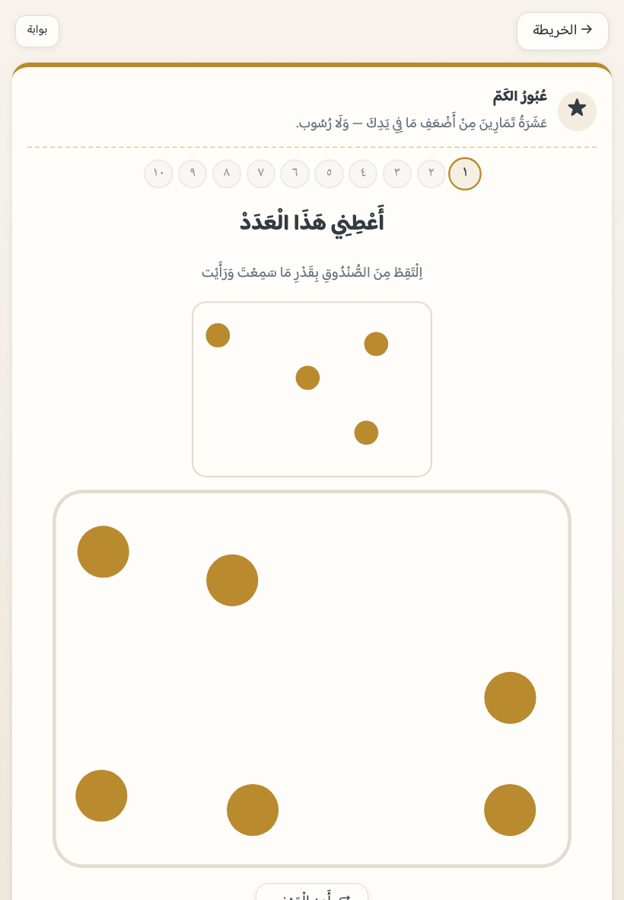
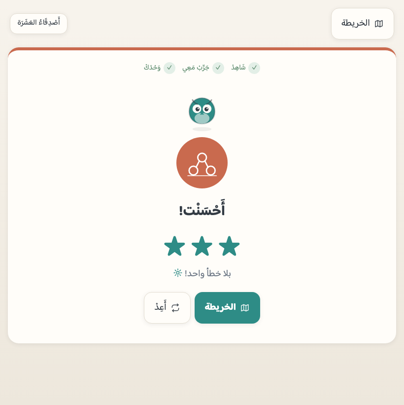
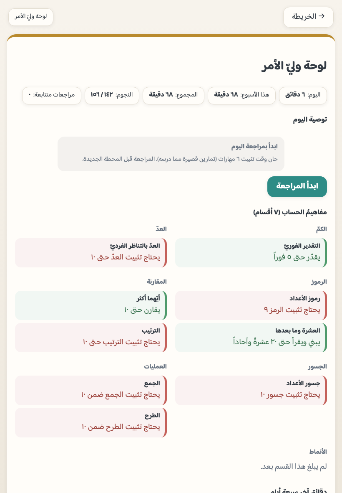

ابدأ بالمراجعة
إن ظهرت بطاقةُ «مراجعة اليوم» فوق الخريطة فابدأ بها: ستةُ تمارينَ من أضعف ما في يده. واللوحةُ تقول ذلك صراحةً في «توصية اليوم».
كيف تُدار الجلسة، وماذا تفعل عند التعثّر، وكيف تُقرأ اللوحة، وكيف يُثبَّت التطبيق ويُحفظ تقدّمُ الطفل — بالأسماء التي تراها على الشاشة.
محطةٌ واحدة في الجلسة تكفي. والتطبيق يفتح على الخريطة، وفيها «تابع من هنا» يضع الطفل في أوّل محطةٍ لم يُتمّها — فلا يبحث ولا يختار.
إن ظهرت بطاقةُ «مراجعة اليوم» فوق الخريطة فابدأ بها: ستةُ تمارينَ من أضعف ما في يده. واللوحةُ تقول ذلك صراحةً في «توصية اليوم».
في «كم ترى؟» لا تعدّ معه — المقصودُ لمحةٌ لا حساب. وفي «المس وعُدّ» اتركه يلمس بنفسه؛ التطبيق ينتظر إصبعَه ولا يدهس عدَّه بالكلام.
الخيارُ الخاطئ لا ينقل — تُعَدّ الكميةُ أمامه عنصراً عنصراً ثم يحاول ثانية. لا تُملِ الجواب، فالتصحيحُ نفسُه هو الدرس.
البوابةُ أطولُ من محطة، وهي أصدقُ ما يريك أين هو. اجلس معه فيها، ولا رسوبَ فيها — تُعاد حتى تُعبَر.


تُفتَح من أيقونة العائلة في أعلى الخريطة، وخلفها بوابةُ ضربٍ بسيطة (لتكون لك أنت لا لطفلك). وما فيها جملٌ لا درجات.

التطبيق نفسُه يعرض شريطَ تثبيتٍ يعرف جهازك. والصفحةُ التعريفية ليست منه: ثبِّتْ من داخل التطبيق (زرّ «ابدأ الآن» أوّلاً)، لا من هذه الصفحة.
افتح التطبيق في سفاري، ثم زرّ المشاركة ← «إضافة إلى الشاشة الرئيسية» ← «إضافة». ولا يعمل التثبيت من متصفّحٍ آخر عليهما — يقول لك الشريطُ ذلك ويطلب فتحَه في سفاري.
يظهر في الشريط زرُّ «ثبّت الآن» فينفتح مربّعُ النظام بنقرةٍ واحدة. وإن لم يظهر فمن قائمة كروم: «تثبيت التطبيق».
أيقونةُ التثبيت في شريط العنوان، أو من القائمة: «تثبيت». ويفتح بعدها في نافذته بلا شريط متصفّح.
في لوحة وليّ الأمر زرُّ «نزّل الأصوات الآن» يحفظها كلَّها دفعةً واحدة (٨١ ملفاً)، ويقول لك متى اكتملت — فيعمل التطبيق بعدها بلا شبكة.
تنبيه يستحقّ الانتباه: تقدّمُ طفلك محفوظٌ في هذا الجهاز وحده — فـمحو بيانات المتصفّح يمحوه. ولذلك في اللوحة نسخة احتياطية من تقدّمه: زرّ «انسخ تقدّم طفلي» يحفظ ملفاً صغيراً، و«استعِد من ملف» يعيده — نسخةٌ تحفظها أنت ولا تغادر جهازك إلا إن أرسلتَ الملفَّ بنفسك. وليس فيه صوتُ طفلٍ ولا صورة، إنما نجومُه ومهاراتُه ودقائقه.
التقدّمُ يُحفظ في هذا الجهاز وحده بلا حساب، فجهازان لطفلٍ واحد رحلتان. وإن لزم النقلُ فبالنسخة الاحتياطية.
محطةٌ في الحصة تكفي. والتطبيق يقول للطفل «أخذ نصيبه اليوم» إن أطال — فالسنّ أكثر مما تنفعه.
اجعل البواباتِ الثلاثَ محطاتِ تقييمك: كلُّ واحدةٍ منها جلسةٌ من أضعف ما في يد الطفل، وعبورُها خبرٌ صادق.
لوحةُ وليّ الأمر خلف سؤالِ ضربٍ بسيط، فلا يفتحها طفل. وفيها ما يكفيك لتقريرٍ قصير: مفاهيمُه ودقائقُه ونجومه.
إن أردت أن ترى الرحلةَ كلَّها قبل أن تعطيه الجهاز، ففي اللوحة زرُّ «معاينةُ التطبيق كلِّه»: يفتح وضع المعاينة — الرحلةُ كلُّها مفتوحة، ولا يُكتب فيها شيءٌ في تقدّم طفلك.
وللمطوّر والمدقّق: بإضافة ?dev=1 إلى العنوان تظهر أسفلَ الخريطة أدوات التجربة (?dev=1) — لا تظهر للطفل، وفيها «أنجِز الكل بنجمة» و«أنجِز الكل بثلاث» و«محو التقدّم» ولوحُ المصيِّر الذي يعرض أنماط رسم الكميات كلَّها. وهي أدواتُ فحصٍ لا تظهر لطفلٍ يفتح التطبيق من أيقونته.